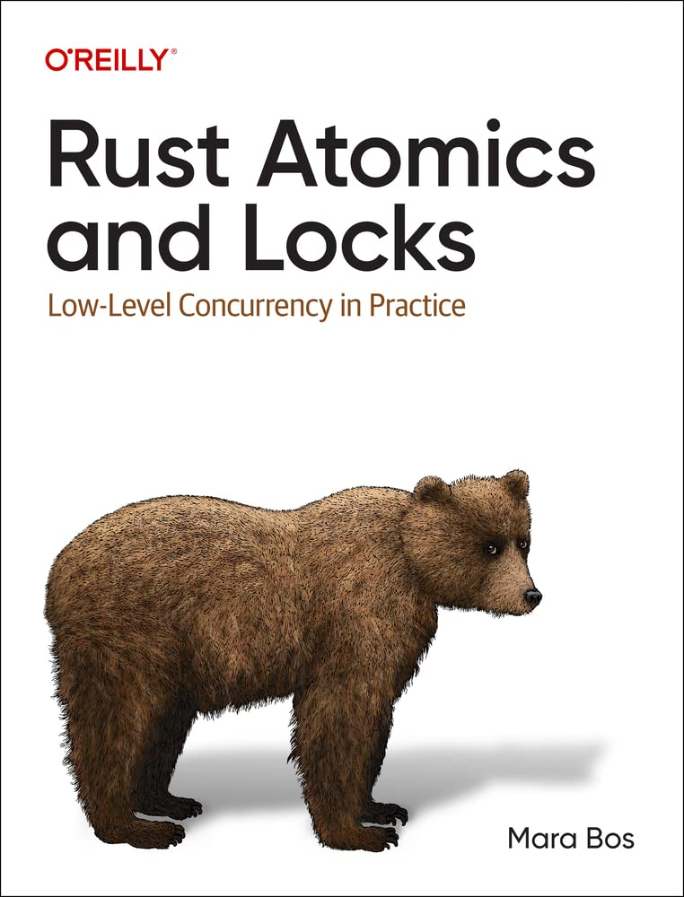

Book review - Rust Atomics and Locks
Published on January 20, 2023 under the tag rust, books

The book Rust Atomics and Locks provides an excellent overview of low-level concurrency in the Rust language. The book covers topics like threads, locks, reference counts, atomics, mailboxes/channels, and more, and it digs into issues with CPUs and operating systems with examples of working Rust code. This book is valuable for both Rust developers wishing to learn concurrency and for developers of concurrent code in other languages who would like to learn how best to do so in Rust. Additionally this book is good for Rust skeptics and Linux-kernel developers who are interested in Rust being included in the Linux kernel.
The book takes the "Build Our Own X" approach to build common concurrency
primitives from scratch. By using this approach the book allows readers to gain
a thorough understanding of how they work and how they can be used in real-world
scenarios. Additionally, this approach helps readers to understand the
trade-offs and decisions that need to be made when implementing these building
blocks, as they are able to see how different design choices affect the
functionality and performance of the resulting implementation.
I particularly enjoyed Chapter 7 - "Understanding the Processor" where the
author performs a deep dive into the low-level details of how the various
concurrency primitives are implemented at the processor level. To achieve this,
the chapter makes use of the Compiler Explorer tool. This
tool allows the reader to see the assembly code generated by the compiler for a
given piece of Rust code, and to compare the assembly code across different
architectures, such as x86 and ARM.
This chapter provides a valuable insight into the low-level workings of the concurrency primitives and how they are implemented in different architectures. It also highlights the importance of understanding the underlying hardware when writing concurrent code and the potential performance impact of different design choices.
I really enjoyed reading "Rust Atomics and Locks" as it provides a comprehensive
and well-written guide to concurrent programming in Rust. The hands-on approach
and the use of the Compiler Explorer tool, made the book an effective way to
deepen the understanding of the concurrency building blocks.
The book is available for free at https://marabos.nl/atomics/ so don’t miss the opportunity to take a look.